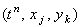

|
Используя введённые обозначения, запишем аппроксимацию дифференциальных
операторов, составляющих уравнение (7.1), в точке . Для аппроксимации производной функции u
по времени обычно используется правая конечная разность (со стабилизацией значения независимой переменной
х в точке с порядковым номером j, а значения независимой переменной y в точке
с порядковым номером k):
Для аппроксимации второй производной функции u по координате х будем использовать
разностный оператор (2.12) (со стабилизацией значения независимой переменной y в точке с
порядковым номером k, а значения независимой переменной t в точке с порядковым номером n):
Для аппроксимации второй производной функции u по координате y также будем использовать разностный оператор
(2.12) (со стабилизацией значения независимой переменной х в точке с порядковым номером j,
а значения независимой переменной t в точке с порядковым номером n):
Подставляя записанные разностные операторы в дифференциальное уравнение (7.1),
получаем явную разностную схему, аппроксимирующую уравнение (7.1) в точке :
Рассматривая аппроксимацию обеих производных второго порядка на (n + 1)-ом шаге по времени, получаем неявную разностную схему:
Учитывая порядок аппроксимации разностных операторов, использованных при составлении
разностных схем (7.2), (7.3), легко видеть, что они имеют первый порядок аппроксимации по
времени и второй - по каждой из координат:
|